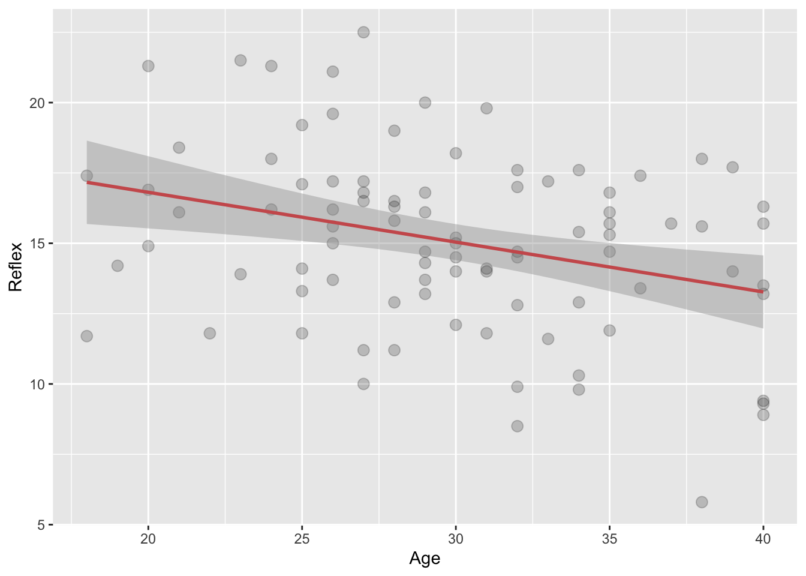
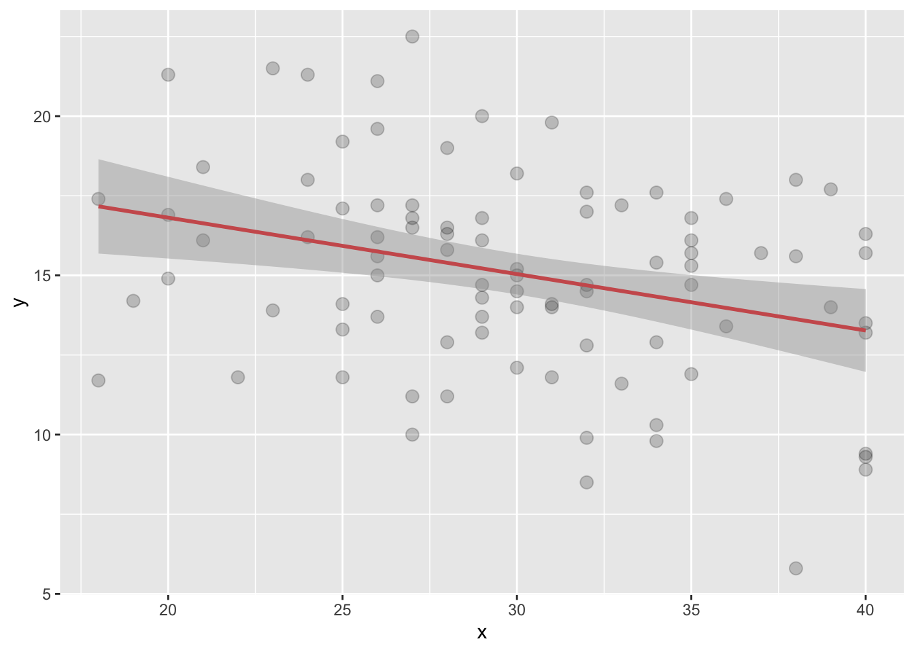

In this WPA, you will analyze data from another fake study. In this fake study the researchers were interested in whether playing video games had cognitive benefits compared to other leisure activities. In the study, 90 University students were asked to do one of 3 leisure activities for 1 hour a day for the next month. 30 participants were asked to play visio games, 30 to read and 30 to juggle. At the end of the month each participant did 3 cognitive tests, a problem solving test (logic) and a reflex/response test (reflex) and a written comprehension test (comprehension).
The data file has 90 rows and 7 columns. Here are the columns
id: The participant ID
age: The age of the participant
gender: The gender of the particiant
activity: Which leisure activity the participant was assigned for the last month (“reading”, “juggling”, “gaming”)
logic: Score out of 120 on a problem solving task. Higher is better.
reflex: Score out of 25 on a reflex test. Higher indicates faster reflexes.
comprehension: Score out of 100 on a reading comprehension test. Higher is better.
Task A
data_wpa7.txt dataset in R (find them on Github) and save it as a new object called leisure. Inspect the dataset first.library(tidyverse)
leisure = read_delim('https://raw.githubusercontent.com/laurafontanesi/r-seminar22/master/data/data_wpa7.txt', delim='\t')##
## ── Column specification ─────────────────────────────────────────────────────────────────────────────────────────────────
## cols(
## index = col_double(),
## id = col_double(),
## age = col_double(),
## gender = col_character(),
## activity = col_character(),
## logic = col_double(),
## reflex = col_double(),
## comprehension = col_double()
## )head(leisure)## # A tibble: 6 x 8
## index id age gender activity logic reflex comprehension
## <dbl> <dbl> <dbl> <chr> <chr> <dbl> <dbl> <dbl>
## 1 1 1 26 m reading 88 13.7 72
## 2 2 2 31 m reading 85 11.8 83
## 3 3 3 38 m reading 82 5.8 67
## 4 4 4 24 m reading 102 18 66
## 5 5 5 30 f reading 48 14 62
## 6 6 6 31 m reading 61 14.1 58feed_me() that takes a string food as an argument, and returns (in case food = 'pizza') the sentence “I love to eat pizza”. Try your function by running feed_me("apples") (it should then return “I love to eat apples”).feed_me = function(food) {
print(paste("I love to eat", food))
}
feed_me("apples")## [1] "I love to eat apples"Without using the mean() function, calculate the mean of the vector vec_1 = seq(1, 100, 5).
Write a function called my_mean() that takes a vector x as an argument, and returns the mean of the vector x. Use your code for task A3 as your starting point. Test it on the vector from task A3.
vec_1 = seq(1, 100, 5)
my_mean = function(x) {
return(sum(x)/length(x))
}
my_mean(vec_1)## [1] 48.5my_mean() function to calculate the mean ‘logic’ rating of participants in the leisure dataset and compare the result to the built-in mean() function (using ==) to make sure you get the same result.my_mean(leisure$logic) == mean(leisure$logic)## [1] TRUEfor (i in 1:10) {
print(i**2)
}## [1] 1
## [1] 4
## [1] 9
## [1] 16
## [1] 25
## [1] 36
## [1] 49
## [1] 64
## [1] 81
## [1] 100squares. You’ll need to pre-create a vector, and use indexing to update it.squares = rep(NA, 10)
for (i in 1:10) {
squares[i] = i**2
}
print(squares)## [1] 1 4 9 16 25 36 49 64 81 100Task B
standardize, that, given an input vector, returns its standardized version. Remember that to normalize a score, also called z-transforming it, you first subtract the mean score from the individual scores and then divide by the standard deviation.standardize = function(x) {
demeaned = x - mean(x, na.rm = TRUE)
st_deviation = sd(x, na.rm = TRUE)
z_score = demeaned/st_deviation
return (z_score)
}leisure dataset. Call this copy z_leisure. Normalise the logic, reflex, age and comprehension columns using the standardize function using a for loop. In each iteration of the loop, you should standardize one of these 4 columns. You can create a vector first, called columns_to_standardize where you store these columns and use them later in the loop. You should not add them as additional columns, but overwrite the original columns.z_leisure = leisure
columns_to_standardize = c("logic", "reflex", "age", "comprehension")
for (col in columns_to_standardize) {
z_leisure[,col] = standardize(pull(leisure[,col])) # NOTE: the pull function is the safest way to get a vector out of a tibble
}
head(z_leisure)## # A tibble: 6 x 8
## index id age gender activity logic reflex comprehension
## <dbl> <dbl> <dbl> <chr> <chr> <dbl> <dbl> <dbl>
## 1 1 1 -0.683 m reading 1.14 -0.424 0.576
## 2 2 2 0.190 m reading 0.962 -1.02 1.29
## 3 3 3 1.41 m reading 0.785 -2.89 0.252
## 4 4 4 -1.03 m reading 1.97 0.920 0.187
## 5 5 5 0.0155 f reading -1.23 -0.330 -0.0728
## 6 6 6 0.190 m reading -0.457 -0.299 -0.332Task C
age and reflex of participants in the leisure datset. Cutomise it and add a regression line.ggplot(data = leisure, mapping = aes(x = age, y = reflex)) +
geom_point(alpha = 0.2, size= 3) +
geom_smooth(method = lm, color='indianred') +
labs(x='Age', y='Reflex')## `geom_smooth()` using formula 'y ~ x'
my_plot() that takes arguments x and y and returns a customised scatterplot with your customizations and the regression line.my_plot = function(x, y) {
g = ggplot(mapping = aes(x = x, y = y)) +
geom_point(alpha = 0.2, size= 3) +
geom_smooth(method = lm, color='indianred')
return(g)
}my_plot() function on the age and reflex of participants in the leisure dataset.my_plot(leisure$age, leisure$reflex)## `geom_smooth()` using formula 'y ~ x'
Task D
1:10. (i.e. Don’t use the existing sum function).final_sum = 0
for (i in 1:10) {
final_sum = final_sum + i
print(final_sum)
}## [1] 1
## [1] 3
## [1] 6
## [1] 10
## [1] 15
## [1] 21
## [1] 28
## [1] 36
## [1] 45
## [1] 55final_sum## [1] 55my_sum that returns the sum of any vector x. Test it on the logic ratings.my_sum = function(x) {
final_sum = 0
for (i in x){
final_sum = final_sum + i
}
return(final_sum)
}
my_sum(leisure$logic)## [1] 6186sum(leisure$logic)## [1] 6186my_mean2 and compare it to both the my_mean function you created, and the in-built mean function. (Bonus: Can you also think of a way to do this without using the the length function)my_mean2 = function(x) {
final_sum = 0
final_length = 0
for (i in x){
final_sum = final_sum + i
final_length = final_length + 1
}
return(final_sum/final_length)
}
my_mean(leisure$logic)## [1] 68.73333my_mean2(leisure$logic)## [1] 68.73333mean(leisure$logic)## [1] 68.73333Task E
p_values with 100 NA values.p_values.p_values with 100 p-values.p_values and calculate the proportion of p-values that are significant at the .05 level.p_values = rep(NA, 100)
sample = rnorm(mean=0, sd=1, n=10)
p_values[1] = t.test(sample)$p.value
p_values[1]## [1] 0.7979984p_values = rep(NA, 100)
for (i in 1:100) {
sample = rnorm(mean=0, sd=1, n=10)
p_values[i] = t.test(sample)$p.value
}p_simulation with 4 arguments: sim: the number of simulations, samplesize: the sample size, mu_true: the true mean, and sd_true: the true standard deviation. Your function should repeat the simulation from the previous question with the given arguments. That is, it should calculate sim p-values testing whether samplesize samples from a normal distribution with mean = mu_true and standard deviation = sd_true is significantly different from 0. The function should return a vector of p-values.Note: to get the p-value of a t-test: p_value = t.test(x)$p.value # Calculate the p.vale for the sample x
p_simulation = function(sim, samplesize, mu_true, sd_true) {
p_values = rep(NA, sim)
for (i in 1:sim) {
sample = rnorm(mean=mu_true, sd=sd_true, n=samplesize)
p_values[i] = t.test(sample)$p.value
}
return(p_values)
}
p_values = p_simulation(sim=1000, samplesize=100, mu_true=0, sd_true=1)
mean(p_values < .05)*100## [1] 6.4